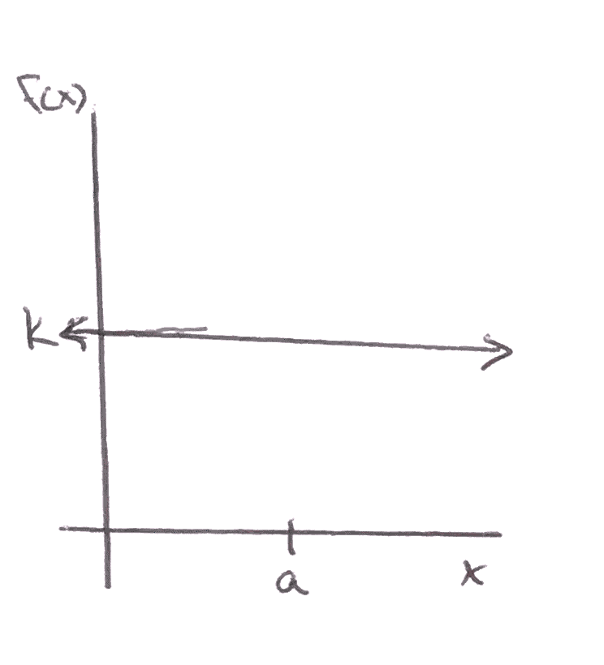
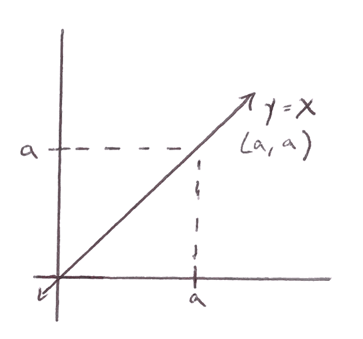

\(\displaystyle\lim_{x \to a} k = k\) Figure1.2.2.
the limit of a constant function is that constant value as \(x\) approaches any number
\(\displaystyle\lim_{x \to a} x = a\) Figure1.2.3.
the limit of a function at a y-value of \(a\) is \(a\) as x approaches \(a\)
The algebraic approach is reliable and specificially helpful if we don't have the graph. It is also more elegant than tables of values (which may be a lot of work as well as misleading).
Theorem1.2.4.
Let \(a\text{,}\) \(L_{1}\text{,}\) and \(L_{2}\) be real numbers.
Let \(f(x) = \dfrac{p(x)}{q(x)}\) be a rational function (\(p(x)\) and \(q(x)\) are both polynomials),
if \(q(a) \neq 0\text{,}\) then \(\displaystyle\lim_{x \to a} f(x) = f(a)\)
if \(q(a) = 0\text{,}\) then the limit is technically DNE
For limit of the form \(f(x) = \dfrac{p(x)}{q(x)}\) as \(x \to a\)
if there are no zeros, just plug in
if there is a zero only on top, not a problem \(f(x) = 0\)
if there is a zero on botton, the 2-sided limit will be \(\infty\text{,}\) \(- \infty\text{,}\) or DNE (will need more work)
if there are zeros on top and bottom is an indeterminate form (factor, simplify, rationalize, and take calc II)
Note1.2.10.
Getting a result of \(\frac{0}{0}\) means the numberof the limit we are looking at gives \(p(a) = 0\) and \(q(a) = 0\) and that \(x-a\) is a factor of each polynomial; this factor can be divided out.
Let's try taking the limit of \(\displaystyle\lim_{x \to 4}\dfrac{x+3}{(x-2)(x-4)}\text{.}\) This function is of the form \(\displaystyle\lim_{x \to a}\dfrac{p(x)}{q(x)}\) where \(p(a) \neq 0\) but \(q(a) = 0\text{.}\) The earlier theorem states that the result is DNE -- can we do better? If the one-sided limits agree, we can give a "better" answer.
Since we know limits of the form \(\dfrac{\mbox{number}}{0}\) give values of \(+ \infty\text{,}\) \(- \infty\text{,}\) and DNE; we are trying to figure out \(+ \infty\) or \(- \infty\) one side at a time. Since the one-sides limits differ, \(\displaystyle\lim_{x \to 4}\dfrac{x+3}{(x-2)(x-4)} = DNE\text{.}\)
Example1.2.3.
Let's try the limit \(\displaystyle\lim_{x \to 4}\dfrac{x - 4}{\sqrt{x} - 2}\text{.}\) This is of the form \(\frac{0}{0}\text{.}\) We can rationalize the denominator by multiplying by the conjugate.